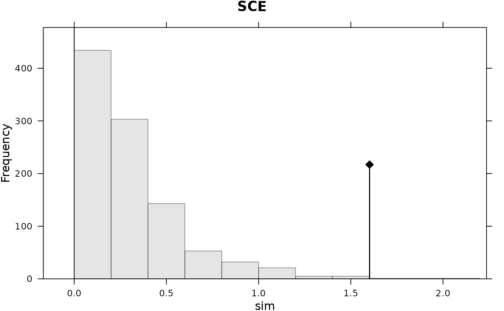

The phylogenetic ANOVA
variance.phylog.RdThis function performs the variance analysis of a trait on eigenvectors associated to a phylogenetic tree.
Usage
variance.phylog(phylog, z, bynames = TRUE,
na.action = c("fail", "mean"))Arguments
- phylog
: an object of class
phylog- z
: a numeric vector of the values corresponding to the variable
- bynames
: if TRUE checks if
zlabels are the same asphylogleaves label, possibly in a different order. If FALSE the check is not made andzlabels must be in the same order thanphylogleaves label- na.action
: if 'fail' stops the execution of the current expression when
zcontains any missing value. If 'mean' replaces any missing values by mean(z)
Details
phylog$Amat defines a set of orthonormal vectors associated the each nodes of the phylogenetic tree. phylog$Adim defines the dimension of the subspace A defined by
the first phylog$Adim vectors of phylog$Amat that corresponds to phylogenetic inertia. variance.phylog performs the linear regression of z on A.
Value
Returns a list containing
- lm
: an object of class
lmthat corresponds to the linear regression ofzon A.- anova
: an object of class
anovathat corresponds to the anova of the precedent model.- smry
: an object of class
anovathat is a summary of the precedent object.
References
Grafen, A. (1989) The phylogenetic regression. Philosophical Transactions of the Royal Society London B, 326, 119–156.
Diniz-Filho, J. A. F., Sant'Ana, C.E.R. and Bini, L.M. (1998) An eigenvector method for estimating phylogenetic inertia. Evolution, 52, 1247–1262.
Author
Sébastien Ollier sebastien.ollier@u-psud.fr
Daniel Chessel
Examples
data(njplot)
njplot.phy <- newick2phylog(njplot$tre)
variance.phylog(njplot.phy,njplot$tauxcg)
#> $lm
#>
#> Call:
#> stats::lm(formula = fmla, data = df)
#>
#> Coefficients:
#> (Intercept) A1 A2 A3 A4 A5
#> 1.020e-15 2.884e-01 3.291e-01 -1.967e-02 4.661e-02 3.326e-01
#> A6 A7 A8 A9 A10 A11
#> 9.722e-02 -4.594e-01 5.077e-02 -2.489e-01 3.056e-01 2.126e-01
#> A12 A13
#> -1.691e-01 -1.293e-01
#>
#>
#> $anova
#> Analysis of Variance Table
#>
#> Response: z
#> Df Sum Sq Mean Sq F value Pr(>F)
#> A1 1 2.9935 2.9935 9.2111 0.006080 **
#> A2 1 3.8986 3.8986 11.9960 0.002209 **
#> A3 1 0.0139 0.0139 0.0429 0.837899
#> A4 1 0.0782 0.0782 0.2407 0.628576
#> A5 1 3.9834 3.9834 12.2569 0.002019 **
#> A6 1 0.3402 0.3402 1.0469 0.317332
#> A7 1 7.5986 7.5986 23.3809 7.855e-05 ***
#> A8 1 0.0928 0.0928 0.2855 0.598470
#> A9 1 2.2304 2.2304 6.8630 0.015646 *
#> A10 1 3.3618 3.3618 10.3442 0.003977 **
#> A11 1 1.6270 1.6270 5.0064 0.035705 *
#> A12 1 1.0293 1.0293 3.1673 0.088946 .
#> A13 1 0.6023 0.6023 1.8532 0.187190
#> Residuals 22 7.1498 0.3250
#> ---
#> Signif. codes: 0 ‘***’ 0.001 ‘**’ 0.01 ‘*’ 0.05 ‘.’ 0.1 ‘ ’ 1
#>
#> $sumry
#> Df Sum Sq Mean Sq F value Pr(>F)
#> Phylogenetic 13 27.8502 2.14232 6.5919 6.188e-05 ***
#> Residuals 22 7.1498 0.32499
#> ---
#> Signif. codes: 0 ‘***’ 0.001 ‘**’ 0.01 ‘*’ 0.05 ‘.’ 0.1 ‘ ’ 1
#>
par(mfrow = c(1,2))
table.phylog(njplot.phy$Ascores, njplot.phy, clabel.row = 0,
clabel.col = 0.1, clabel.nod = 0.6, csize = 1)
dotchart.phylog(njplot.phy, njplot$tauxcg, clabel.nodes = 0.6)
if (requireNamespace("adephylo", quietly = TRUE) & requireNamespace("ape", quietly = TRUE)) {
tre <- ape::read.tree(text = njplot$tre)
adephylo::orthogram(njplot$tauxcg, tre = tre)
}
#> Warning: Labels are not unique.
#> Warning: Labels are not unique.
#> Warning: Labels are not unique.
#> Warning: Labels are not unique.
#> Warning: Labels are not unique.

#> class: krandtest lightkrandtest
#> Monte-Carlo tests
#> Call: adephylo::orthogram(x = njplot$tauxcg, tre = tre)
#>
#> Number of tests: 4
#>
#> Adjustment method for multiple comparisons: none
#> Permutation number: 999
#> Test Obs Std.Obs Alter Pvalue
#> 1 R2Max 0.1801004 0.2895183 greater 0.339
#> 2 SkR2k 11.3482467 -2.7907091 greater 0.999
#> 3 Dmax 0.3987362 3.7605169 greater 0.002
#> 4 SCE 1.6017356 4.7360403 greater 0.004
#>